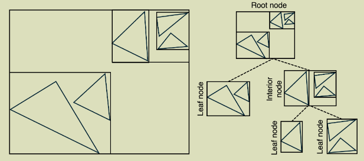

Writing a Hardware-Accelerated PBRT Engine
This entry documents the progress of writing a physically-accurate ray tracer step by step. This starts from bsaic ray tracing optimizations (BVH acceleration structure with thread paralliziation for the 67th time), to adding more cool features. This project is built off of a minimalistic ray tracing library, but it is not enough for what we want to achieve!
2/6/2026: starting writing basic, CPU-bound ray tracer in C++.
Question: how do we speed up rendering 500k+ triangles from taking 30+ minutes to take 2 seconds?
We start with a very basic, unoptimized CPU bound codebase. The base code from this library currently implements a brute force ray intersesctor algorithm, in short it traces a ray against all triangles and stores the resulting information in an intersection struct. This shit slow:
/* Brute force search through all triangles */
for (uint32_t idx = 0; idx < m_mesh->getTriangleCount(); ++idx) {
float u, v, t;
if (m_mesh->rayIntersect(idx, ray, u, v, t)) {
/* An intersection was found! Can terminate
immediately if this is a shadow ray query */
if (shadowRay)
return true;
ray.maxt = its.t = t;
its.uv = Point2f(u, v);
its.mesh = m_mesh;
f = idx;
foundIntersection = true;
}
}
Let's do the low hanging fruit of implementing a Bounding Volumne Hiearchy, which organizes a scene's triangles into a binary tree where each node stores an axis-aligned bounding box enclosing all geometry in its subtree. During ray tracing, if a ray misses a node's bounding box, the entire subtree is skipped, which turns O(n) brute force search into something closer to O(logn). For the scene I rendered with more than 500k triangles, this optimization determines the difference between minutes and seconds (for the brute force version of my code, I ran it for 30+ minutes before rage quiting.) Here is a picture of BVH acceleration: And, My basic algorithm looks like this:

buildBVH(triangles, bbox):
if no triangles: return null
if triangles ≤ 10: return leaf(triangles)
// SAH binned split along longest axis
axis = longest axis of bbox
divide axis into 12 bins
for each triangle:
assign to bin based on centroid position
// evaluate all 11 candidate splits
bestCost = ∞
for each split plane between bins:
cost = surfaceArea(left) × count(left)
+ surfaceArea(right) × count(right)
if cost < bestCost: record this split
// only split if it's cheaper than a leaf
if bestCost ≥ surfaceArea(bbox) × totalCount:
return leaf(triangles)
partition triangles at best split
return interior(
left = buildBVH(leftTriangles, leftBBox),
right = buildBVH(rightTriangles, rightBBox)
)
rayTraverse(ray):
stack = [root]
while stack not empty:
node = stack.pop()
if ray misses node.bbox: skip
if node is leaf:
test ray against each triangle
if shadow ray and hit: return true
else:
stack.push(left child)
stack.push(right child)
return closest hit
The construction of my BVH is top-down, at each node I use the Surface Area Heuristic to find a good split. I bucket the triangle centroids into a few binds along the bounding box's longest axis, and I evaluate the SAH cost C = S(A) * N_A + S(B) * N_B for each candidate split plane. The split that minimizes the cost is chosen, My design for ray traversal uses an explicit stack rather than recursion, which a fixed-size array of 64 entries (more than enough) to avoid any per-ray heap allocation:
uint32_t stack[64];
int stackPtr = 0;
stack[stackPtr++] = 0; // start at root
while (stackPtr > 0) {
const BVHNode &node = m_nodes[stack[--stackPtr]];
if (!node.bbox.rayIntersect(ray))
continue;
if (node.isLeaf()) {
// test triangles in this leaf
} else {
stack[stackPtr++] = nodeIdx + 1; // left child
stack[stackPtr++] = node.start; // right child
}
}
After I implemented this optimization, I ultimately shaved the brute-force render time from over half an hour to about 2 seconds. This is 800x faster!